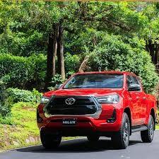
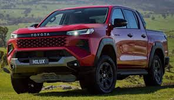
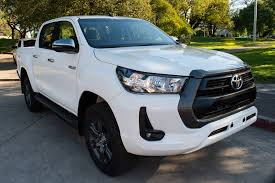
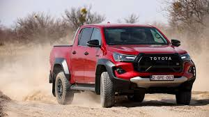
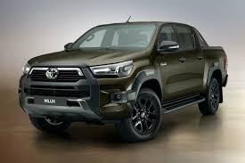
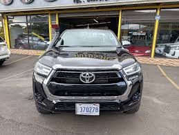

La Toyota Hilux es una serie de camionetas pickup producidas y comercializadas por el fabricante japonés Toyota Motor Corporation. Desde su lanzamiento en 1968, se ha posicionado mundialmente como un vehículo comercial ligero

"Hilux" proviene de la unión de las palabras inglesas "high" (alto) y "luxury" (lujo), lo que inicialmente buscaba destacar un nivel de comodidad y refinamiento superior a las camionetas de trabajo convencionales de la época.

Con más de ocho generaciones, la Hilux ha evolucionado de ser una pickup de trabajo básico a un vehículo que equilibra la robustez con características modernas de confort, seguridad y tecnología.

Es uno de los modelos más internacionalizados de Toyota, con fuerte presencia en Latinoamérica, África, Europa y Asia, adaptándose a diferentes climas y terrenos.

La historia de Toyota con las camionetas se remonta al modelo SB de 1947, pero a mitad de la producción de la segunda generación de la Briska, Toyota se asoció con Hino Motors e impulsó mejoras menores en el modelo.

La nueva Hilux, cuyo nombre es una contracción de "high" (alta) y "luxury" (lujo), utiliza una construcción de bastidor independiente con una suspensión de doble horquilla/muelle helicoidal en la parte delantera y un eje rígido/muelle de ballesta en la parte trasera.